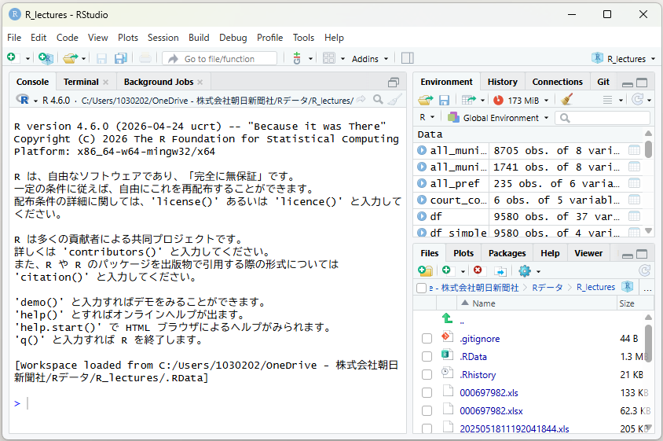
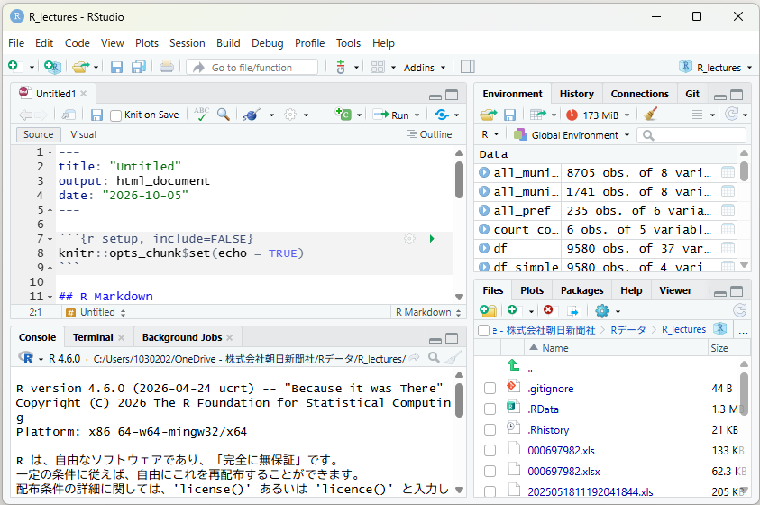

はじめに
RとRStudioを入れる
どちらも無料です。入れたら、4つに区切られた画面の見方をおさえましょう。
Rを入れる
- まず、Rの公式サイト（CRAN＝シーラン）にアクセスします。
- 自分のコンピューターのOS（WindowsやMacなど）に合ったインストーラーをダウンロードします。
- ダウンロードしたファイルをダブルクリックして、画面の指示に従ってインストールを進めます（ほとんどの場合、特別な設定は必要ありません）。
RStudioを入れる
- RStudioのダウンロードページにアクセスし、無料の「RStudio Desktop」版をダウンロードします。
- ダウンロードしたファイルをダブルクリックして、画面の指示に従ってインストールを進めます。
- インストールが完了すると、RStudioが起動します。すでにインストールされているRを自動的に認識してくれます。
これで準備は完了です。
RStudioの画面

インストールできたRStudioを開いてみましょう。最初の画面は3区画に分かれています。
左側——Console（コンソール）
コンピューターに実行させたい命令を「コード」と呼ばれる文章にして、ここに打ち込みます。画面に > という記号が出ているときは、命令を聞く準備がととのっていますよ、さあどうぞ命令してください、という合図です。
一方で + の記号が出ているときは、前に入力した命令が最後まで終わっていませんよ、という意味です（コンピューターが「からの～～～？」と聞いてきている状態です）。閉じ括弧を忘れたときによく出ます。Escキーを押せば > の状態に戻すことができます。
右上——EnvironmentとHistory
「Environment（環境）」タブでは、いまRStudioで扱っているデータなどにどんなものがあるのかを確認できます。最初はまだ何のデータも読み込んでいないので、空っぽになっています。
「History（履歴）」タブには、コンソールですでに実行された命令が記録されています。
右下——Files、Plots、Packages
「Files」では、作業中のフォルダの構造やファイルが確認できます。「Plots」ではデータから作成したグラフや表などが、「Packages」では、インストール済みで利用可能なパッケージの一覧が見られます（パッケージとは何かというのは次の章で説明しますので、ひとまず忘れてください）。
もう一つ必要な区画——コードを書き残す場所
作業にはもう一つの区画が必要になります。データ処理や分析の手順を一連のコードとして書き残し、保存するための場所です。R MarkdownやR Scriptなどの形で保存しておくことができますが、ここではR Markdownでのやり方を書いていきます。

左上にある「File」をクリックし、さらに「New File」→「R Markdown」と進んでいくと、ファイル名の最後の部分（拡張子）が .Rmd となっているR Markdownの新しいファイルを開くことができます。
この区画は、コードを保存しておくための場所です。データ分析の過程は試行錯誤の連続ですので、コンソールの区画を使っていろいろなコードを実行して、結果がどうなるかをみてみる必要がありますが、試した結果うまくいって、後に残しておきたくなったコードをR Markdownのほうに書いておくわけです。
また、R Markdownはコンピューターに実行させる命令を書いておくコードの部分と、人間のための（コンピューターには読ませない）メモを書いておくMarkdown部分に分かれています。保存したうえで、htmlやPDFなどの形式で出力することもできます。
その他、覚えておくと楽になるキー操作
最初のうちはマウスでちまちま実行してもいいのですが、この3つだけは早めに覚えると作業がラクになります。
| キー | 何が起きるか |
|---|---|
| Ctrl＋Enter | カーソルがある行（または選択した範囲）のコードを実行する |
| Ctrl＋Shift＋M | パイプ演算子 %>% が出てくる（これが何をするものかはまた後ほど） |
| Ctrl＋Shift＋Enter | いま書いているチャンクを丸ごと実行する |
MacではCtrlをCmdに読み替えてください。
それからもう一つ。このサイトでは、コードを書いている部分はコピペができないようにしています。コードをよく見て、自分で手を動かして同じものを書くという訓練が、Rの各種コマンドや文法を覚えるうえでとても役に立つと思うからです。
Rに限らずプログラミング言語は、ちょっとした文法ミスでエラーが頻発します。それはたとえば変な場所に意図しない記号が紛れ込んでいたりとか、半角にすべきところを全角にしてたりとか、非常にささいなものです。何でエラーが出るんじゃぁといらいらすることは多々ありますが、そういうのを繰り返すうちにはまりやすいパターンもわかり、また文法やコマンドがだんだんと身についてくるわけです。
寺子屋みたいな古い学習法のようにも思えますが、とにかくまずは手を動かす。我慢しておつきあいください。